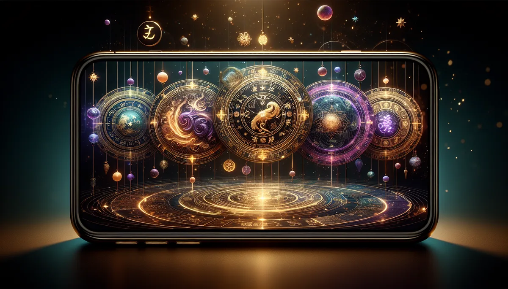

小 六 壬
民俗占卜 · 三秒出卦 · Liuren Oracle
不需要生辰，不需要算命。
一個數字，一個當下的座標。
最古老的問事方式，往往是最直接的。
小六壬源自中國古代，相傳為諸葛亮所創，民間又稱「諸葛馬前課」。因為只用六個宮位（大安、留連、速喜、赤口、小吉、空亡），掐指即算，三秒出卦，是古代行軍、出行、問事最快的占卜法。馥靈之鑰保留傳統六宮結構，加入現代覺察視角與認知芳療，讓這套千年智慧成為你日常的覺察工具。
大安
留連
速喜
赤口
小吉
空亡
🔢 數字起卦
⏰ 時間起卦
靜心一秒，直覺說出一個數字（1–99）
您的直覺數字，已包含了答案
--:--:--
當下時辰起卦
這件事關於（選填）
✦ 顯示座標
?
起卦中
凝神靜氣⋯
✦ 六面向覺察解析 ✦
H.O.U.R. 座標定位
看見現狀 · 辨識盲點 · 解鎖突破 · 行動進化
🌿 認知芳療 · 香氣校準
✦ 專屬冥想練習
六宮座標圖
今日落宮：
馥 靈 馥 語
🔮 複製AI深度解讀指令
📋 複製卦象紀錄
🔄 重新問事
複製解讀指令後，貼到任一 AI 即可獲得深度解析
座標看清了，然後呢？
小六壬給方向，易經和30套命理系統幫您把地圖展開。
易經覺察占卜 →
33套命盤
抽智慧牌卡
馥靈之鑰 · hourlightkey.com